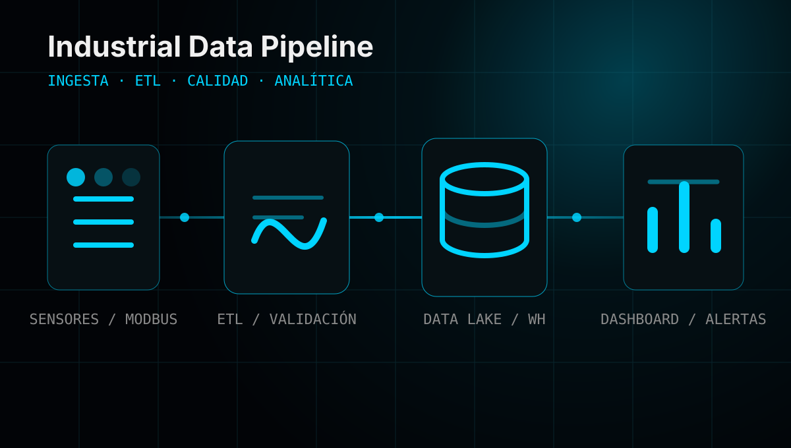
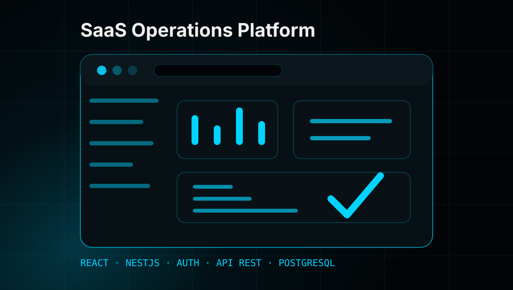
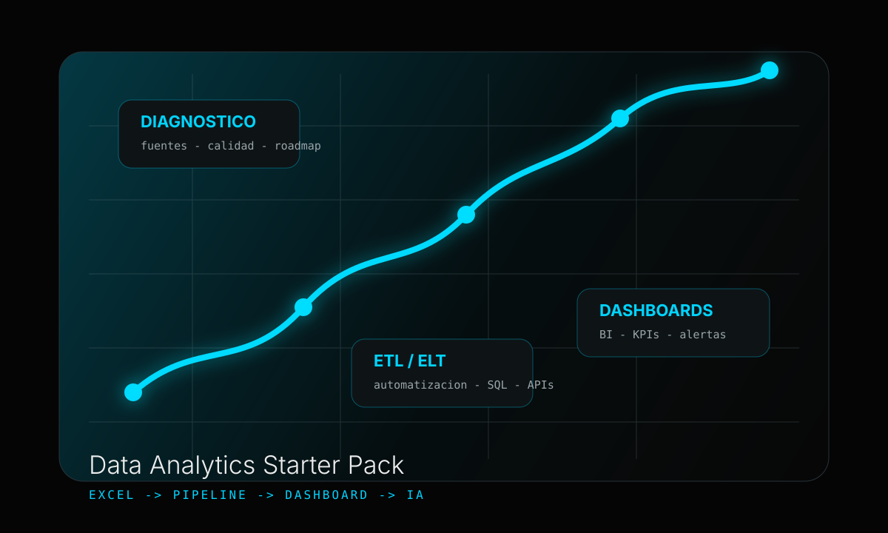

Consolidar
Unificamos fuentes de datos, diseñamos modelos robustos y establecemos una base técnica confiable.
INGENIERÍA 4.0
Infraestructura de datos, inteligencia operacional,
automatización avanzada y ecosistemas digitales de alto rendimiento.
/ FILOSOFÍA
El software sin contacto con el mundo real es solo código.
El hardware sin inteligencia es hardware obsoleto.
Nosotros construimos en la intersección.
Cada sistema que desplegamos conecta señales físicas con decisiones estratégicas. Desde sensores inteligentes hasta agentes de IA que optimizan la operación en milisegundos. No vendemos herramientas aisladas. Entregamos infraestructura que evoluciona.
/ CAPACIDADES
Sistemas embebidos de alta precisión, IoT avanzado y diseño de hardware inteligente optimizado para entornos de alta exigencia.
Agentes autónomos, modelos de lenguaje aplicados a flujos operativos y visión artificial para optimización en tiempo real.
Arquitecturas de datos de alto rendimiento, modelos analíticos y visualización avanzada para transformar silos de información en activos estratégicos.
Infraestructura escalable en la nube, plataformas de datos en tiempo real y arquitecturas de microservicios de alta disponibilidad.
Modernización de infraestructuras operativas, integración de controladores industriales y optimización de flujos críticos.
Desarrollo de herramientas de alta precisión: gemelos digitales, dashboards operativos y plataformas de control especializado.
Sistemas de Gestión de Seguridad (SGSI) diseñados para proteger la integridad de los datos y la continuidad de la operación.
Diagnóstico técnico, diseño de arquitecturas digitales escalables y hojas de ruta para la modernización tecnológica.
Capacitación especializada en ecosistemas digitales y nuevas tecnologías operacionales para equipos de ingeniería.
/ INTELIGENCIA DE DATOS
Apoyamos la modernización de infraestructuras de datos: desde la consolidación de silos hasta la implementación de analítica avanzada e inteligencia artificial.
Resolvemos la fragmentación de la información: silos desordenados, falta de trazabilidad o indicadores desfasados. Construimos una base técnica sólida y escalable para habilitar capacidades de predicción, optimización y agentes de IA que aporten valor real al negocio.
Unificamos fuentes de datos, diseñamos modelos robustos y establecemos una base técnica confiable.
Implementamos flujos de información automáticos, integración de sistemas y pipelines escalables.
Transformamos datos en inteligencia: dashboards gerenciales, alertas predictivas e IA aplicada.
/ SERVICIOS ESTRATÉGICOS
Auditoría integral de flujos de información para identificar brechas y oportunidades estratégicas.
Modelos de datos y visualización avanzada para el monitoreo de indicadores clave de desempeño.
Flujos de datos automatizados para eliminar la carga administrativa y centralizar la información.
Modelos predictivos y optimización mediante IA para organizaciones con infraestructura de datos madura.
/ PORTAFOLIO DE INGENIERÍA
Optimización de la disponibilidad de activos mediante análisis avanzado de patrones y detección temprana de anomalías.
Interfase de lenguaje natural para la interacción con sistemas industriales, facilitando la toma de decisiones basada en datos.
Arquitectura de control de lazo cerrado con telemetría en la nube, permitiendo la optimización remota de procesos críticos en tiempo real.

Consolidación y procesamiento de telemetría masiva para transformar datos crudos en activos de información confiables para la operación.

Ecosistema digital multiusuario para la gestión integral de operaciones, trazabilidad de servicios y soporte a la toma de decisiones.

Programa estratégico para la transición desde procesos análogos hacia una cultura orientada a datos, con impacto directo en la visibilidad gerencial.
/ NUESTRO RESPALDO
Soporte en Automatización Avanzada
Diseñamos soluciones digitales con el respaldo de una firma especializada con 20 años de experiencia operacional. Fusionamos la agilidad del software moderno con la confiabilidad que exige la infraestructura crítica.
/ EVALUACIÓN TÉCNICA
Comparta los desafíos de su infraestructura actual o los cuellos de botella informativos que desea resolver. Nuestro equipo diseñará una solución a medida.